We fit an arbitrage-carrying forward-discounted call surface directly in price space, enforce static no-arbitrage through sparse linear operators, and use a local fog layer where quotes are inconsistent.
Quantitative Finance
Downloadable summary PDF: open PDF.
The fitted object is the forward-discounted call surface:
\[ C^f(K,\tau)=e^{r(\tau)\tau}C(K,\tau), \qquad m=\log\!\frac{K}{F_t(\tau)}. \]
Static no-arbitrage is imposed directly on this object:
\[ \partial_m C^f\le 0, \qquad \partial_{mm}C^f\ge 0, \qquad \left.\partial_\tau C^f\right|_K\ge 0, \qquad 0\le C^f\le F_t(\tau). \]
Because the basis is defined in \((m,\tau)\) rather than \((K,\tau)\), the calendar derivative at fixed strike is implemented exactly as
\[ \left.\partial_\tau C^f\right|_K =\partial_\tau C^f-\partial_m C^f\bigl(r_{cc}(\tau)+\tau r'_{cc}(\tau)\bigr). \]
The fit is done directly on the forward-discounted call sheet.
Each axis is mapped to \([-1,1]\) before spectral expansion:
\[ \Phi_m(m)=\frac{2}{W_m}\Bigl(\operatorname{asinh}(\lambda_m(m-c_m))-\phi_{m,-}\Bigr)-1, \]
\[ \Phi_\tau(\tau)=2\sqrt{\frac{\tau-\tau_{\min}}{\tau_{\max}-\tau_{\min}}}-1. \]
The asinh warp concentrates resolution near ATM and compresses deep wings; the square-root warp allocates resolution near short maturities, where curvature is typically strongest. Their derivatives remain explicit:
\[ \Phi'_m(m)=\frac{2\lambda_m}{W_m\sqrt{1+\lambda_m^2(m-c_m)^2}}, \qquad \Phi'_\tau(\tau)=\frac{1}{\sqrt{(\tau_{\max}-\tau_{\min})(\tau-\tau_{\min})}}. \]
So the approximation is geometry-aware while retaining analytic control of derivative operators.
With \(T_k(x)=\cos(k\arccos x)\) and \(T'_k(x)=kU_{k-1}(x)\), the surface expansion is
\[ C^f(m,\tau)=\sum_{k=0}^{K}\sum_{\ell=0}^{L}a_{k\ell} \,T_k\!\bigl(\Phi_m(m)\bigr)T_\ell\!\bigl(\Phi_\tau(\tau)\bigr). \]
At data points \((m_i,\tau_i)\), the design structure is
\[ A_{i,(k,\ell)}=T_k(x_i)T_\ell(y_i), \qquad A=\Phi_K\odot\Phi_L. \]
One coefficient vector drives the full sheet, and the matrix structure inherits row-wise Khatri-Rao / gridwise Kronecker structure. The key gain is that derivative identities remain explicit enough to compile no-arbitrage geometry into sparse operators.
Because basis and warps differentiate in closed form, physical derivative blocks are linear in the same coefficients:
\[ A_m=\operatorname{diag}(\Phi'_m)\,\partial_xA, \qquad A_{mm}=\operatorname{diag}\!\bigl((\Phi'_m)^2\bigr)\partial_{xx}A+\operatorname{diag}(\Phi''_m)\partial_xA, \]
\[ A_\tau=\operatorname{diag}(\Phi'_\tau)\,\partial_yA, \qquad A_{\tau|K}=A_\tau-D_FA_m, \]
with
\[ D_F=\operatorname{diag}\bigl(r_{cc}(\tau)+\tau r'_{cc}(\tau)\bigr). \]
Static constraints become sparse linear inequalities:
\[ A_Ka\le 0, \qquad -A_{KK}a\le 0, \qquad -A_{\tau|K}a\le 0, \qquad 0\le Aa\le F. \]
In this framing, butterfly and calendar arbitrage are not emergent interpolant side-effects; they are explicit operator rows acting on modal coefficients.
The data term is aligned to executable bid-ask bands:
\[ \frac12\|W^{1/2}(Aa-y)\|_2^2 +\mu\sum_i \tfrac12\,\operatorname{dist}\bigl((Aa)_i,[b_i,a_i]\bigr)^2. \]
This rewards fits that land inside spreads, not only near mids. Quadratic stabilisers include spectral ridge:
\[ R_{\mathrm{ridge}}(a)=\frac{\lambda_{\mathrm{ridge}}}{2}\sum_{k,\ell}(1+\alpha k^2+\beta \ell^2)^s a_{k\ell}^2, \]
price-invariant reparameterisation \(\tilde{a}=U^{-1}a\) with \(A\mapsto AU\) and \(A_\bullet\mapsto A_\bullet U\), and blockwise whitening:
\[ W^{1/2}A_{[:,G_\ell]}=Q_\ell R_\ell, \qquad U_{G_\ell,G_\ell}=R_\ell^{-1}, \qquad (AU)_{[:,G_\ell]}^\top W(AU)_{[:,G_\ell]}=I. \]
The transport-style density smoother is
\[ R_{DW}(a)=\frac{\lambda_{DW}}{2}a^\top E^\top L^+Ea. \]
In coefficient space, the constrained fit is the projection:
\[ a^\star=\arg\min_{a\in C_h}\frac12\|a-\hat a\|_{M_h}^2, \qquad \hat a=M_h^{-1}b. \]
So the baseline surface is the metric projection of an unconstrained spectral fit onto the arbitrage-free polyhedron.
This paper studies the full forward-discounted call price surface, rather than implied-volatility smiles or families of maturity-by-maturity slices (SVI / eSSVI).
Let \(C(K,\tau)\) denote the market call price at strike \(K\) and maturity \(\tau\), and let \(D(0,\tau)\) be the discount factor from maturity back to today. Define the forward-discounted call by
\[ C^{\mathrm f}(K,\tau) \;=\; \frac{C(K,\tau)}{D(0,\tau)}. \]
Let \(F(\tau)\) be the forward price for maturity \(\tau\), and introduce log-moneyness relative to that forward,
\[ m \;=\; \log\!\frac{K}{F(\tau)}, \qquad K \;=\; F(\tau)e^{m}. \]
In these coordinates the market becomes one sheet,
\[ (m,\tau)\longmapsto C^{\mathrm f}(m,\tau), \]
and the static no-arbitrage conditions become the following.
The economically exact inequalities are
\[ 0 \;\le\; C^{\mathrm f}(K,\tau) \;\le\; F(\tau), \]
\[ \partial_K C^{\mathrm f}(K,\tau) \;\le\; 0, \qquad \partial_{KK} C^{\mathrm f}(K,\tau) \;\ge\; 0, \]
\[ \left.\partial_\tau C^{\mathrm f}(K,\tau)\right|_{K} \;\ge\; 0, \]
together with the short-end boundary condition
\[ C^{\mathrm f}(K,0+) \;=\; (S_0-K)^+. \]
Once the surface is written in \(m\)-coordinates, these constraints are pushed through the chain rule exactly. Since
\[ \partial_K \;=\; \frac{1}{K}\,\partial_m, \]
and
\[ \partial_{KK} \;=\; \frac{1}{K^2}\bigl(\partial_{mm}-\partial_m\bigr), \]
the strike monotonicity and strike convexity constraints become
\[ \partial_m C^{\mathrm f}(m,\tau) \;\le\; 0, \qquad \bigl(\partial_{mm}-\partial_m\bigr)C^{\mathrm f}(m,\tau) \;\ge\; 0. \]
Likewise, fixed-strike calendar monotonicity is not raw \(\partial_\tau\) in \((m,\tau)\)-coordinates. Since \(K=F(\tau)e^m\) is held fixed, one must correct for forward drift:
\[ \left.\partial_\tau C^{\mathrm f}\right|_{K} \;=\; \partial_\tau C^{\mathrm f} -\rho(\tau)\,\partial_m C^{\mathrm f}, \qquad \rho(\tau) =\partial_\tau \log F(\tau). \]
The method chooses the state variable and coordinates first, represents the whole sheet in a basis adapted to observed quote geometry, compiles economic shape restrictions into linear operators, and solves the convex projection problem directly in price space.
At the global stage, the coefficient vector \(a\) is obtained from a constrained convex program of the schematic form
\[ \begin{aligned} a^\star \in \arg\min_a\;& \frac12\bigl\|W^{1/2}(A_q a-y)\bigr\|_2^2 + \mu\sum_{i=1}^N \ell_{\mathrm{band}}\!\bigl((A_q a)_i\,;\,b_i,a_i\bigr) \\ &\quad + \frac{\lambda_{\mathrm{ridge}}}{2}\,a^\top \Lambda a + R_{\mathrm{DW}}(a) + R_{\mathrm{RN}}(a) + R_{\Omega}(a) \\[4pt] \text{s.t. }& A_K a \le 0,\qquad -A_{KK}a \le 0,\qquad -A_{\tau|K}a \le 0,\qquad 0 \le Aa \le F. \end{aligned} \]
Here \(A_q\) is the basis evaluated at quote locations, \(A\) is the surface evaluated on a diagnostic grid, \(W\) is a heteroscedastic weight matrix, \(\ell_{\mathrm{band}}\) is a convex executable-band loss, \(\Lambda\) is a spectral ridge, and \(R_{\mathrm{DW}},R_{\mathrm{RN}},R_{\Omega}\) are targeted regularizers for density geometry, the short-end boundary, and fragile high-frequency short-end modes.
The second stage is deliberately local. The global fit is used to build a badness map. Only activated patches are refined. Those patches are then lifted into a local measure-valued state over a discrete lattice in \((m,\tau,u)\), where \(u\) denotes discrete local price levels. That local probability geometry is the fog. The fog is not a replacement for the global surface. It is a local uncertainty thickness sitting on top of the globally disciplined backbone.
The global stage enforces the economic invariants of the entire sheet. The local stage absorbs the irreducible inconsistency of actual market quotes. The result is a surface that is globally arbitrage-aware and locally noise-aware.
The video shows the forward-discounted price sheet \(C^{\mathrm f}(m,\tau)\). The object is the entire forward-discounted price sheet, not a collection of separate smiles.
The definition is
\[ C^{\mathrm f}(K,\tau) = \frac{C(K,\tau)}{D(0,\tau)}, \qquad m = \log\!\frac{K}{F(\tau)}. \]
The display is therefore a surface in the variables \((m,\tau)\), with vertical axis \(C^{\mathrm f}\) or its normalized version \(C^{\mathrm f}/F_{\mathrm{ref}}\). In these units the sheet is economically interpretable:
The estimator is solving for one surface-valued object,
\[ u(m,\tau)\approx C^{\mathrm f}(m,\tau), \]
not for ad hoc slice parameters. The constraints, regularizers, and local fog repair all act on the same price-space sheet.
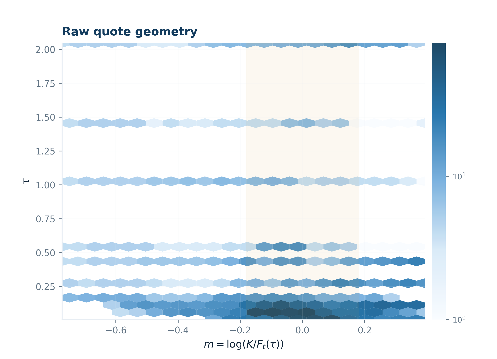
The market is not sampled uniformly in \((m,\tau)\). It is sampled where dealers and clients actually trade.
Let the quote set be
\[ \mathcal Q = \bigl\{ (m_i,\tau_i,b_i,a_i,\ell_i) \bigr\}_{i=1}^N, \]
where \(b_i\) and \(a_i\) are bid and ask, and \(\ell_i\) is a liquidity or reliability proxy. Define midpoint and spread by
\[ y_i=\frac{b_i+a_i}{2}, \qquad s_i=a_i-b_i. \]
A natural heteroscedastic weight is
\[ w_i = \frac{\ell_i}{\max(s_i,\varepsilon)^2}, \]
which says: a tight and liquid quote should matter more than a wide and stale one.
Quotes cluster near ATM and near the short end. That means a naive Euclidean approximation in raw coordinates will misallocate approximation power. A uniform polynomial basis in raw \(m\) and raw \(\tau\) will spend too much of its budget in under-sampled regions and too little where the tape is dense and where arbitrage pathologies first appear.
The density plot motivates the coordinate charts that follow.
Before imposing arbitrage, the paper solves a geometric problem: how should one represent a sheet observed on an irregular, highly anisotropic point cloud?
The answer is to map \((m,\tau)\) into a normalized square where Chebyshev modes are stable, but to do so through charts that deliberately redistribute resolution toward the economically difficult regions.
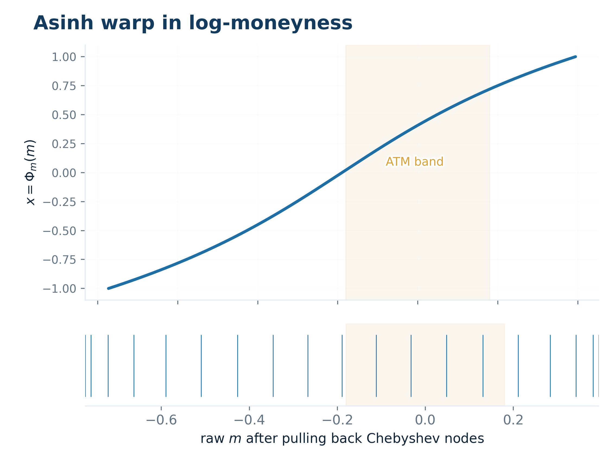
The log-moneyness chart is an endpoint-preserving asinh map,
\[ x=\Phi_m(m) = \frac{2}{W_m} \Bigl( \operatorname{asinh}\bigl(\lambda_m(m-c_m)\bigr)-\phi_{m,-} \Bigr)-1, \]
with
\[ \phi_{m,-} = \operatorname{asinh}\bigl(\lambda_m(m_{\min}-c_m)\bigr), \qquad \phi_{m,+} = \operatorname{asinh}\bigl(\lambda_m(m_{\max}-c_m)\bigr), \qquad W_m=\phi_{m,+}-\phi_{m,-}. \]
The derivatives are explicit:
\[ \Phi_m'(m) = \frac{2\lambda_m}{W_m\sqrt{1+\lambda_m^2(m-c_m)^2}}, \]
\[ \Phi_m''(m) = -\frac{2\lambda_m^3(m-c_m)} {W_m\bigl(1+\lambda_m^2(m-c_m)^2\bigr)^{3/2}}. \]
The wrap stretches the dense central region around the forward and compresses the far wings. In \(x\)-space the basis is uniform; in raw \(m\)-space it becomes intentionally nonuniform. The map is a representational prior: most of the economically relevant variation in the observed book lives near the center, and the chart allocates basis resolution accordingly.
Because the derivatives are analytic, the strike-operator matrices can be written exactly after the change of variables.
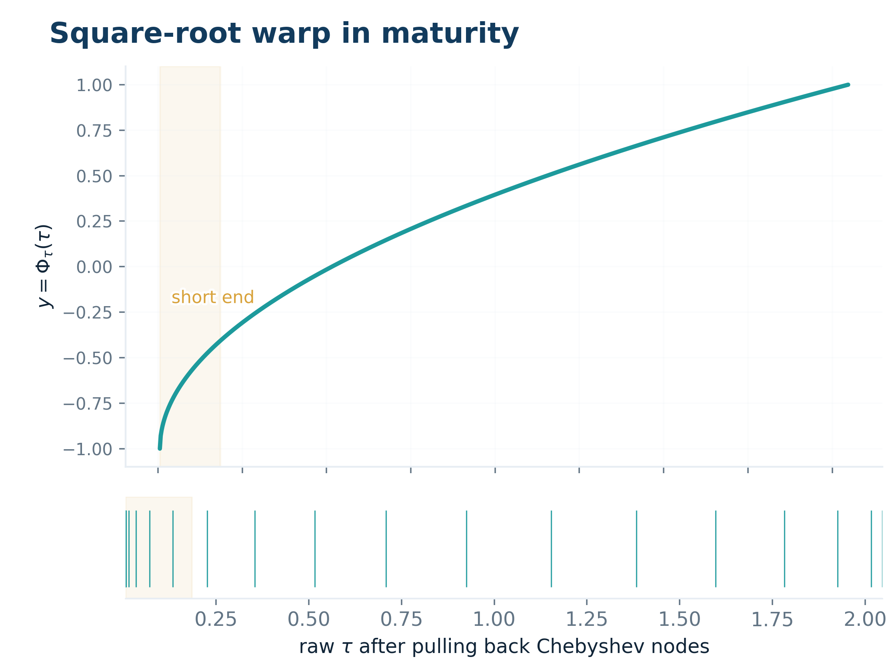
The maturity chart is
\[ y=\Phi_\tau(\tau) = 2\sqrt{\frac{\tau-\tau_{\min}}{\tau_{\max}-\tau_{\min}}}-1. \]
Its derivative is
\[ \Phi_\tau'(\tau) = \frac{1}{\sqrt{(\tau_{\max}-\tau_{\min})(\tau-\tau_{\min})}}. \]
The singular-looking growth of \(\Phi_\tau'(\tau)\) near \(\tau_{\min}\) is intentional. The short end is exactly where the surface is hardest to fit, exactly where calendar violations first emerge, and exactly where the intrinsic-value boundary sits. The square-root chart allocates more resolution there.
This is one of the main advantages of working in price space rather than in implied volatility. In price space, the short end is not a nuisance to be hidden; it is a boundary layer to be resolved.
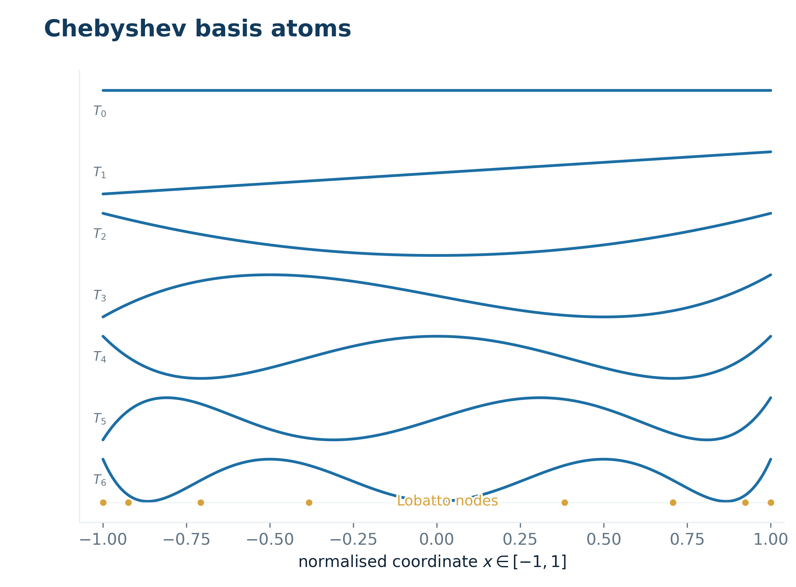
On the warped square \((x,y)\in[-1,1]^2\), the paper uses a tensor Chebyshev basis. The one-dimensional modes are
\[ T_k(x)=\cos\!\bigl(k\arccos x\bigr). \]
The surface is represented as
\[ u(m,\tau;a) = \sum_{k=0}^{K}\sum_{\ell=0}^{L} a_{k\ell}, T_k\!\bigl(\Phi_m(m)\bigr), T_\ell\!\bigl(\Phi_\tau(\tau)\bigr). \]
Equivalently, after vectorizing the coefficient tensor \(a_{k\ell}\) into \(a\in\mathbb R^{(K+1)(L+1)}\), one writes
\[ u = Aa. \]
The coefficient tensor is the object on which the geometry is done. Prices are linear in \(a\). Derivatives are linear in \(a\). Arbitrage diagnostics are linear in \(a\). Regularization is quadratic in \(a\). Whitening is a linear reparameterization of \(a\). The entire architecture is built around the fact that, once the basis is chosen, the option surface becomes a convex geometry in coefficient space.
Low modes carry the global economics of the sheet: level, forward-relative skew, maturity slope, broad curvature. High modes carry local detail. The regularization architecture is about letting the low modes speak while preventing the high modes from manufacturing fake arbitrage-free precision out of microstructure noise.
The representation now becomes an optimization problem: coefficients map to prices, derivatives, constraints, and regularizers.
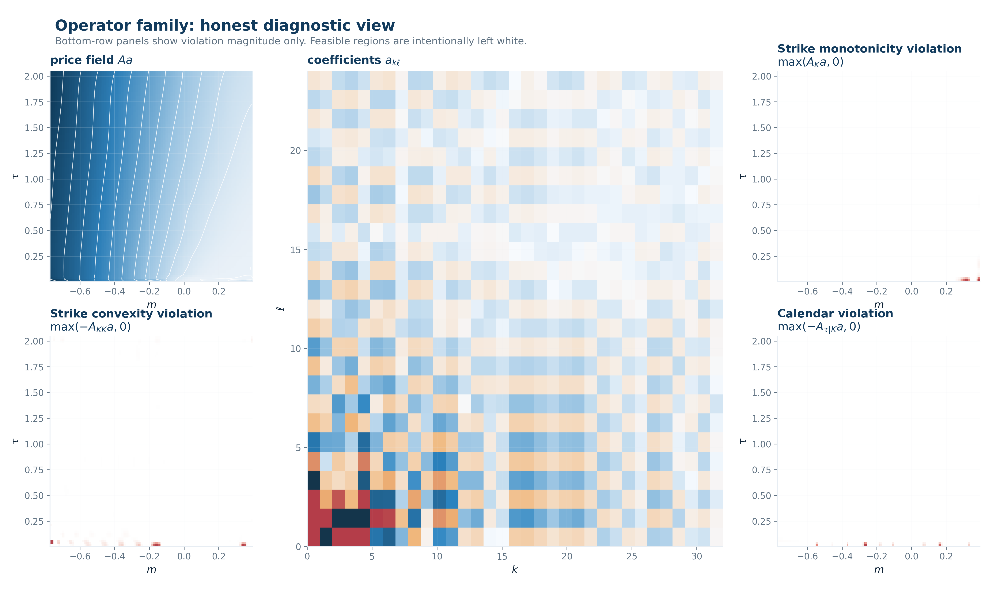
The same coefficient vector \(a\) simultaneously determines the price sheet and all of its economic diagnostics.
At any evaluation set \(g=1,\dots,G\),
\[ u_g=(Aa)_g, \qquad \partial_m u_g=(A_m a)_g, \qquad \partial_{mm}u_g=(A_{mm}a)_g, \qquad \partial_\tau u_g=(A_\tau a)_g. \]
Let \(K_g=F(\tau_g)e^{m_g}\). Then the exact operator blocks are
\[ A_K = \operatorname{diag}(K_g^{-1})A_m, \]
\[ A_{KK} = \operatorname{diag}(K_g^{-2})(A_{mm}-A_m), \]
\[ A_{\tau|K} = A_\tau-\operatorname{diag}(\rho_g)A_m, \qquad \rho_g=\rho(\tau_g)=\partial_\tau\log F(\tau_g). \]
Therefore the static no-arbitrage system is
\[ A_K a \le 0, \qquad -A_{KK}a \le 0, \qquad -A_{\tau|K}a \le 0, \qquad 0 \le Aa \le F. \]
The surface is not fitted first and diagnosed later. Fit and diagnosis are the same object viewed through different linear maps.
The method is a linear-operator compilation of static no-arbitrage into coefficient space rather than another smooth interpolator.
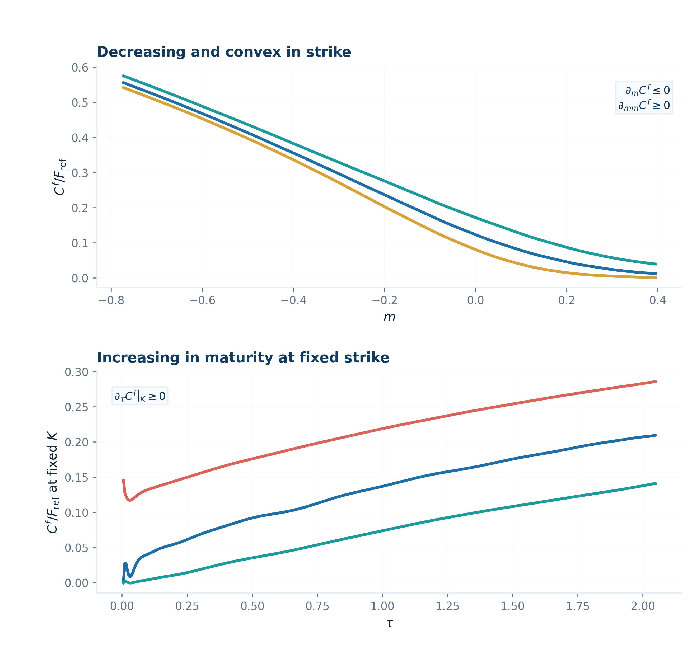
At fixed maturity, the strike section must satisfy
\[ K \mapsto C^{\mathrm f}(K,\tau) \quad\text{is decreasing and convex.} \]
Equivalently, in \(m\)-coordinates,
\[ \partial_m C^{\mathrm f}(m,\tau)\le 0, \qquad \bigl(\partial_{mm}-\partial_m\bigr)C^{\mathrm f}(m,\tau)\ge 0. \]
At fixed strike, the calendar section must satisfy
\[ \tau \mapsto C^{\mathrm f}(K,\tau) \quad\text{is nondecreasing,} \]
which in \((m,\tau)\)-coordinates means
\[ \left.\partial_\tau C^{\mathrm f}\right|_K = \partial_\tau C^{\mathrm f} -\rho(\tau)\,\partial_m C^{\mathrm f} \ge 0. \]
Calendar monotonicity is not a fixed-moneyness statement. It is a fixed-strike statement. If one enforces raw \(\partial_\tau \ge 0\) in \(m\)-space, one is constraining the wrong quantity. The operator \(A_{\tau|K}\) exists precisely to enforce the economically correct derivative.
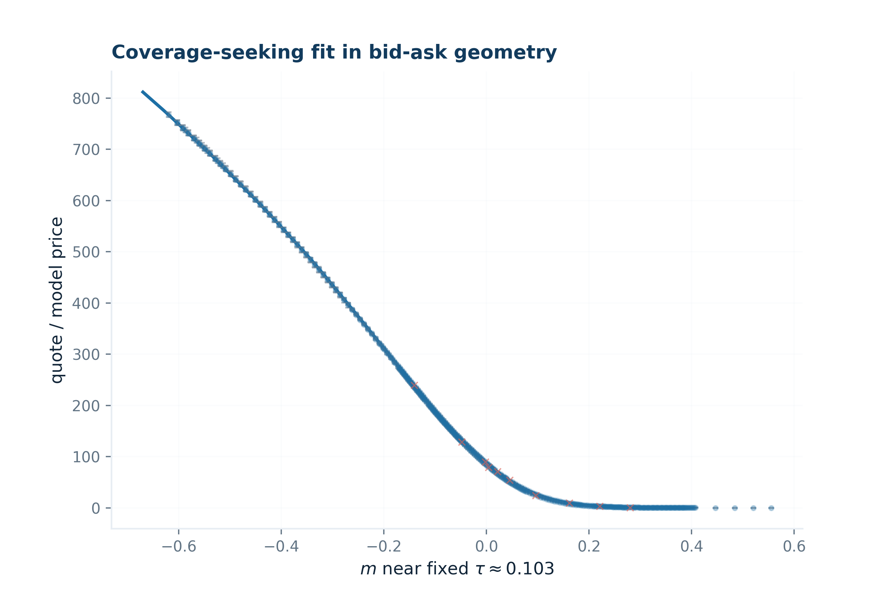
The method fits directly to executable band geometry.
Define the convex band loss
\[ \ell_{\mathrm{band}}(\hat y\,;\,b,a) = \frac12(b-\hat y)_+^2 + \frac12(\hat y-a)_+^2. \]
Then the quote-fitting term is
\[ L_{\mathrm{fit}}(a) = \frac12\bigl\|W^{1/2}(A_q a-y)\bigr\|_2^2 + \mu\sum_{i=1}^N \ell_{\mathrm{band}}\!\bigl((A_q a)_i\,;\,b_i,a_i\bigr). \]
The first term is a midpoint anchor. The second term fits inside the band. Inside the bid-ask interval, the band penalty is zero. Outside the interval, the cost grows quadratically with distance to the executable set.
The distinction matters for calibration. Midpoints are not tradable objects. They are summary statistics. The executable set is \([b_i,a_i]\). The model therefore uses the midpoint to choose among economically acceptable surfaces, not to define economic acceptability itself.
The blue curve is the surface estimate. The bars are the market’s tradable geometry. The red violations are the economically relevant misses.
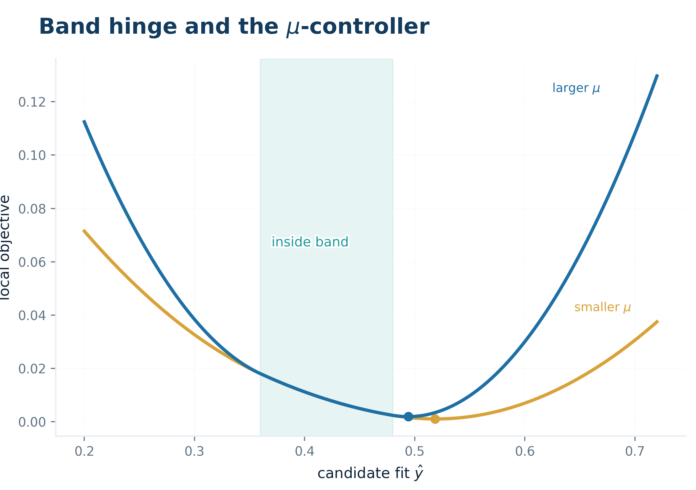
The parameter \(\mu\) controls how aggressively the optimizer pays to stay inside executable bands.
At a single quote, the local objective is
\[ \frac12 w(\hat y-y)^2 + \mu\,\ell_{\mathrm{band}}(\hat y\,;\,b,a). \]
Globally, define coverage by
\[ \operatorname{Cov}(a) = \frac{1}{N}\sum_{i=1}^N \mathbb{1}\!\left\{ b_i \le (A_q a)_i \le a_i \right\}. \]
As \(\mu\) increases, out-of-band points become more expensive. The optimizer therefore gives up more midpoint fidelity in order to stay inside executable quotes. In practice this creates a monotone control knob between “fit the center of the quote cloud” and “cover the executable set.”
That allows a target-coverage controller. One can solve for \(a^\star(\mu)\) and adjust \(\mu\) until \(\operatorname{Cov}(a^\star(\mu))\) reaches a pre-specified level. Coverage is therefore part of the geometry of the objective itself.
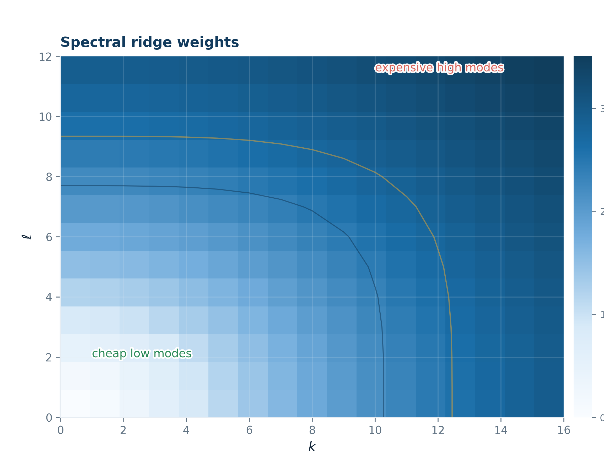
The Chebyshev tensor is expressive enough to fit noise if left alone. The ridge regularizer prices spectral complexity directly in coefficient space.
Let \(a=\operatorname{vec}(a_{k\ell})\). Define the modal penalty
\[ R_{\mathrm{ridge}}(a) = \frac{\lambda_{\mathrm{ridge}}}{2}\,a^\top \Lambda a, \]
with diagonal entries
\[ \Lambda_{(k,\ell),(k,\ell)} = \bigl(1+\alpha k^2+\beta \ell^2\bigr)^s. \]
This is a Sobolev-type prior over modes. Low frequencies are cheap. High frequencies are expensive. The anisotropy between \(k\) and \(\ell\) lets the model penalize strike oscillation and maturity oscillation differently.
This acts in the coefficient tensor and says that detailed local oscillation must pay a spectral rent rather than averaging quotes or blurring the price sheet in observation space.
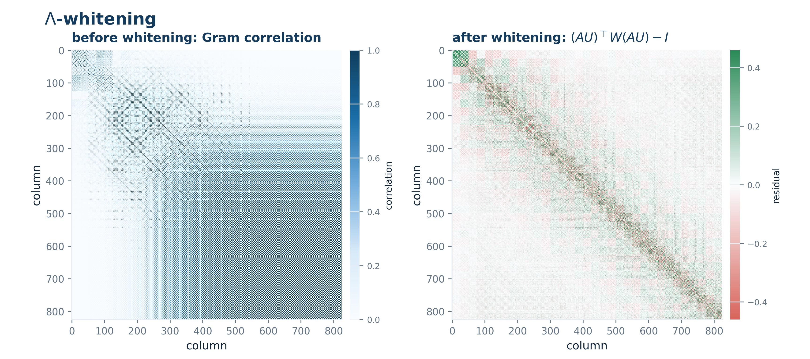
The global QP is mathematically clean but can be numerically ugly if the weighted basis columns are highly collinear. Whitening is a reparameterization that improves conditioning without changing the fitted surface.
Partition the coefficient vector into maturity blocks \(G_\ell\). For each block,
\[ W^{1/2}A[:,G_\ell] = Q_\ell R_\ell \]
via reduced QR. Then define a block-diagonal transform \(U\) by
\[ U_{G_\ell,G_\ell}=R_\ell^{-1}. \]
If \(\tilde{a} = U^{-1}a\), then
\[ \tilde{A} \;=\; AU, \]
and blockwise one gets
\[ (W^{1/2}AU)[:,G_\ell] = Q_\ell, \qquad (AU)[:,G_\ell]^\top W (AU)[:,G_\ell] = I. \]
What changes is the metric in coefficient coordinates. The local Gram structure becomes near-orthonormal, and the solver stops spending effort distinguishing nearly redundant directions.
Once the global convex stage is set up, the next question is where to spend regularization budget. The answer in this paper is not “everywhere.” It is: use the minimum extra structure needed to suppress the pathologies the raw tape actually creates.
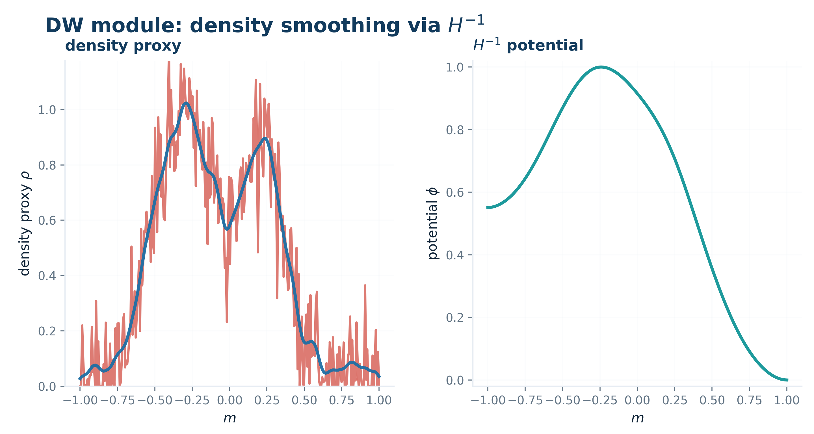
The risk-neutral density is the strike curvature of the forward-discounted call:
\[ \rho(K,\tau) = \partial_{KK}C^{\mathrm f}(K,\tau). \]
On a discrete strike or moneyness grid, let \(L_m\) be the one-dimensional Neumann Laplacian along the strike direction, and let \(L_m^+\) denote its Moore–Penrose pseudoinverse. Then the density regularizer is
\[ R_{\mathrm{DW}}(a) = \frac{\lambda_{\mathrm{DW}}}{2}, \rho(a)^\top L_m^+ \rho(a). \]
Equivalently, if \(\phi\) solves a discrete Poisson problem
\[ L_m \phi = \rho - \bar\rho, \]
then the penalty is the potential energy
\[ \rho^\top L_m^+\rho = |\nabla \phi|_2^2. \]
The regularizer does not punish density pointwise in an \(L^2\) sense. It measures density through the smooth potential that generates it. In practice this is a much better geometry for stabilizing density chatter than simply penalizing curvature magnitude in price space. It says: do not allow economically implausible redistributions of density mass, but also do not mutilate the price sheet to erase every local fluctuation.
The density proxy and \(H^{-1}\) potential show the same regularizer from the signal and Poisson viewpoints. The penalty lives more naturally in the potential than in the raw density.
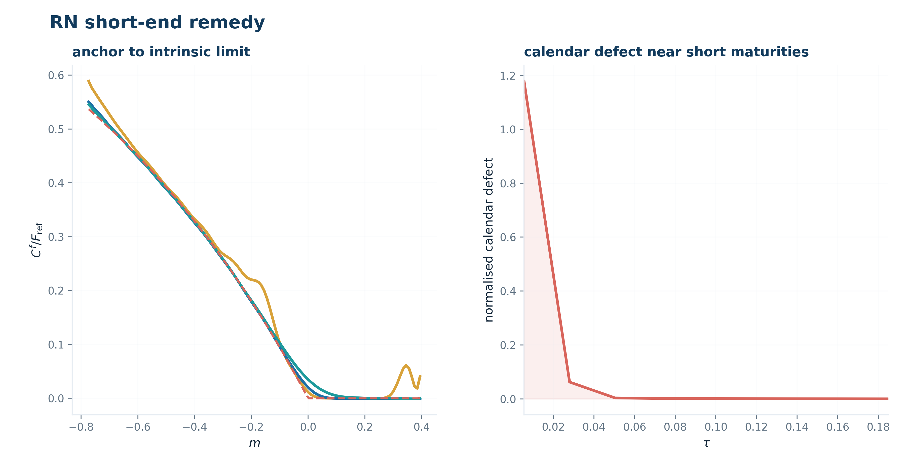
The short end is a singular region. As \(\tau \downarrow 0\), the call must collapse to intrinsic value. At the same time, small calendar inconsistencies become visible in forward-relative coordinates.
The short-end remedy therefore has two pieces. First, it anchors the surface to the intrinsic boundary:
\[ c_{0+}(m) = (F_0-K)^+. \]
Second, it damps fixed-strike calendar defects near the boundary. A clean form is
\[ R_{\mathrm{RN}}(a) = \frac{\lambda_{\mathrm{RN}}}{2} \bigl| \Gamma_{0+}^{1/2}(Aa-c_{0+}) \bigr|_2^2 + \frac{\eta_{\mathrm{RN}}}{2} \bigl| \Gamma_{0+}^{1/2}A_{\tau|K}a \bigr|_2^2, \]
where \(\Gamma_{0+}\) is concentrated on small maturities.
This is a boundary-layer regularizer aimed at the exact place where the surface must satisfy both a hard terminal geometry and fragile calendar structure. The left panel of the figure is an anchoring-to-intrinsic mechanism; the right panel as a direct suppression of short-end calendar defect.
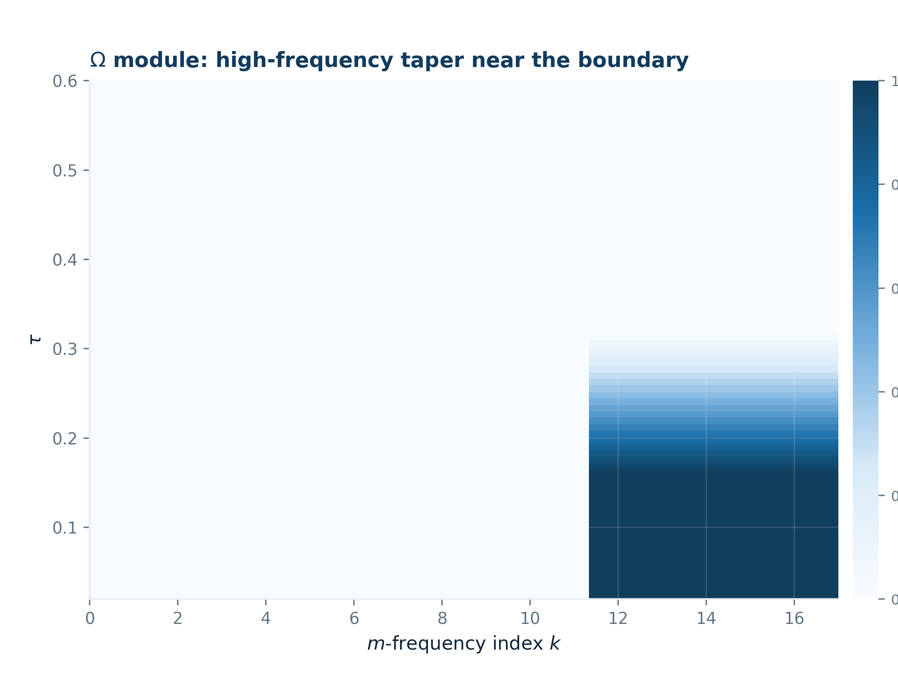
Not all high-frequency structure is bad; however what is bad is high-frequency structure in the wrong place.
Let \(U_\omega\) denote a spectral representation along the strike/moneyness direction, and let \(M_\omega\) be a mask that activates only high-\(m\) frequencies near the short boundary. Then
\[ R_{\Omega}(a) = \frac{\lambda_{\Omega}}{2} \bigl| M_\omega U_\omega a \bigr|_2^2. \]
The penalty is local in frequency and local in maturity. It says: when the short-end geometry becomes unstable, do not globally over-smooth the entire sheet. Instead, selectively suppress only the modes that are dangerous in that region.
Every extra regularizer is targeted. Nothing is global unless it has to be.
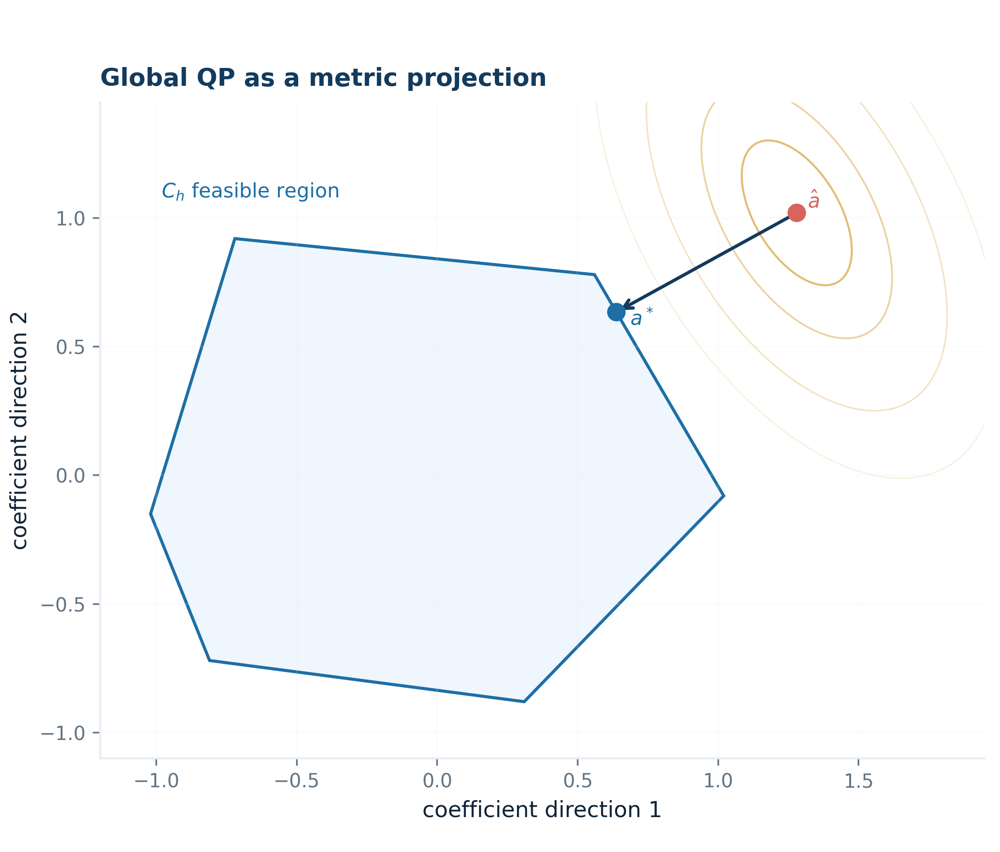
The ellipses are objective level sets; the polygon is the no-arbitrage feasible set; the fitted surface is the projection point.
Let \(H\) be the Hessian of the unconstrained objective, and let \(\hat a\) be its unconstrained minimizer. Define the feasible set
\[ \mathcal C = \left\{ a: A_Ka\le0,\; -A_{KK}a\le0,\; -A_{\tau|K}a\le0,\; 0\le Aa\le F \right\}. \]
Then the constrained solution can be written as the metric projection
\[ a^\star = \arg\min_{a\in\mathcal C} \frac12(a-\hat a)^\top H (a-\hat a). \]
This says the model first computes where the data and penalties would like to go if economics did not matter, and then projects that point onto the convex set of economically valid sheets under the metric defined by the objective.
The global stage projects the market onto the no-arbitrage feasible set. It is a projection of the market onto an economically admissible manifold, with the distance measured in a noise-aware objective metric.
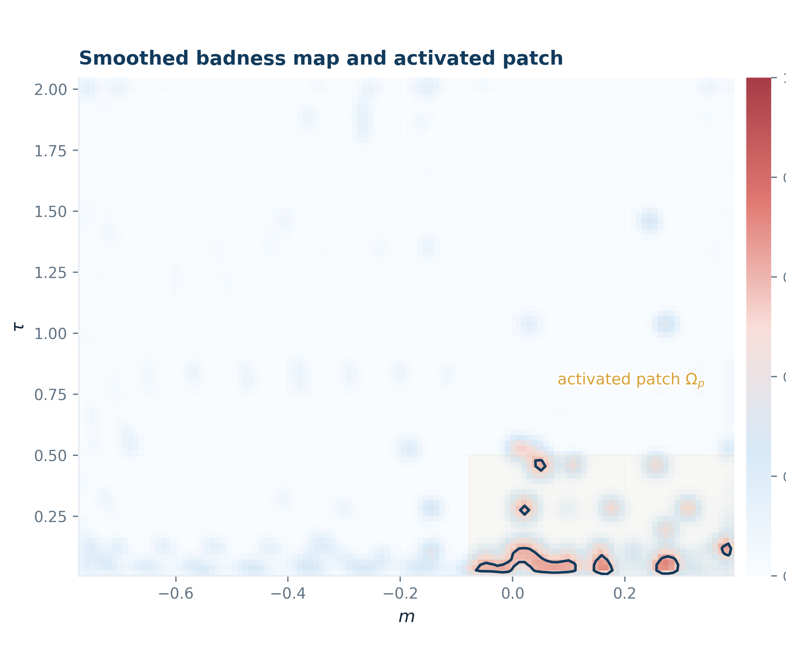
The global stage is not equally stressed everywhere. Some regions fit cleanly. Others are where the market itself is internally inconsistent.
Define the quote-level normalized miss
\[ q_i = \frac{ \max\{b_i-\hat c_i,\;\hat c_i-a_i,\;0\} }{ \max(a_i-b_i,\varepsilon) }, \qquad \hat c_i=(A_q a^\star)_i. \]
Bin and smooth these misses over the \((m,\tau)\) grid, and combine them with normalized operator violations, for example schematically as
\[ B_{ij} = \alpha_q \widetilde Q_{ij} + \alpha_K \widetilde{(A_Ka^\star)^+}_{ij} + \alpha_{KK}\widetilde{(-A_{KK}a^\star)^+}_{ij} + \alpha_{\tau K}\widetilde{(-A_{\tau|K}a^\star)^+}_{ij}. \]
Thresholding this field yields an activated set
\[ \Omega = \{(i,j):B_{ij}>\theta\}. \]
The local stage is triggered by diagnostics. The badness map is the gatekeeper that decides where the deterministic global projection has done enough and where additional local flexibility is justified.
The local stage adds a patchwise probability layer over price levels, but only where the global fit is under stress. The global sheet is kept intact. Only activated regions are granted extra uncertainty thickness, and that thickness is represented probabilistically.
Once a patch \(\Omega\) is activated, the local state is lifted into a discrete lattice over price levels.
Let \(u_1<\cdots<u_{n_u}\) be discrete local price levels. The fog lattice is
\[ L_\Omega = \{(i,j,k):(i,j)\in\Omega,\;k=1,\dots,n_u\}. \]
The fog state is a probability measure
\[ \pi = \{\pi_{ijk}\}_{(i,j,k)\in L_\Omega}, \qquad \pi_{ijk}\ge0, \qquad \sum_{(i,j)\in\Omega}\sum_{k=1}^{n_u}\pi_{ijk}=1. \]
The cell occupancy is
\[ n_{ij} = \sum_{k=1}^{n_u}\pi_{ijk}, \]
and the conditional local price distribution at a given cell is
\[ p_{k|ij} = \frac{\pi_{ijk}}{n_{ij}} \quad\text{whenever } n_{ij}>0. \]
Its conditional mean is
\[ \bar u_{ij} = \sum_{k=1}^{n_u} u_k\,p_{k|ij}. \]
The fog is a probability geometry over where the patch is stressed and how thick the local vertical uncertainty must be. It is not a second global price surface. A deterministic local correction is the degenerate case where each conditional distribution collapses to one price level. The fog generalizes that into a local uncertainty cloud.
The patch is repaired by placing probability mass on local price levels on a local lattice in \((m,\tau,u)\). The noise-aware penalty then becomes a trade-off between deterministic miss and out-of-band fog mass.
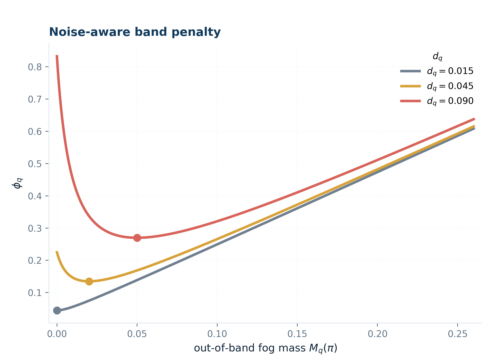
At quote \(q\), let \(i_q,j_q\) denote the patch cell associated with that quote. Define the out-of-band fog mass by
\[ M_q(\pi) = \sum_{k\in K_q^{\mathrm{out}}} \pi_{i_q j_q k}, \]
where \(K_q^{\mathrm{out}}\) indexes the price levels \(u_k\) that would place the quote outside its executable interval \([b_q,a_q]\).
Let the geometric miss at that quote be
\[ d_q(u) = \operatorname{dist}\!\bigl(C_q(u),[b_q,a_q]\bigr). \]
The local trade-off is then encoded by
\[ \phi_q(u,\pi) = \frac{d_q(u)^2}{\varepsilon+M_q(\pi)} + \lambda_{\mathrm{noise}}\bigl(\varepsilon+M_q(\pi)\bigr). \]
The first term says that large out-of-band fog mass relaxes deterministic fit pressure. The second term says that fog thickness is itself expensive. The optimizer therefore cannot hide every mistake behind uncertainty. It must decide where uncertainty is truly warranted.
Differentiating with respect to \(M_q\) gives
\[ \partial_{M_q}\phi_q = -\frac{d_q(u)^2}{\bigl(\varepsilon+M_q\bigr)^2} + \lambda_{\mathrm{noise}}. \]
So the unconstrained stationary point is
\[ \varepsilon+M_q^\star = \frac{|d_q(u)|}{\sqrt{\lambda_{\mathrm{noise}}}}, \]
or
\[ M_q^\star = \max\left\{ 0,\; \frac{|d_q(u)|}{\sqrt{\lambda_{\mathrm{noise}}}}-\varepsilon \right\}. \]
Small inconsistencies should be repaired deterministically. Large inconsistencies are allowed to buy uncertainty thickness, but only at a quantifiable price. This is not a heuristic slack variable. It is a noise budget with a closed-form trade-off.
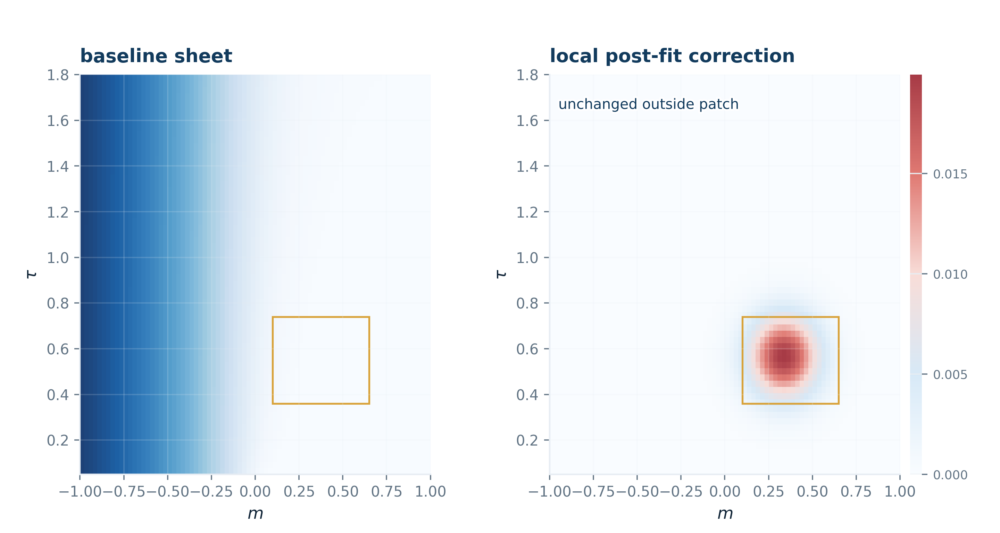
The local stage is not allowed to rewrite the whole sheet. It acts only inside the activated patch.
Let \(u_0\) denote the global baseline surface, and let \(u_I\) denote the local state on the patch index set \(I\). The embedded surface is
\[ u(u_I) = P_\Omega u_I + u_{0,\mathrm{off}}, \]
meaning: inside the patch, use the local state; outside the patch, freeze the global baseline.
A natural closeness term is
\[ E_{\mathrm{cl}}(u_I) = \frac{\lambda_{\mathrm{cl}}}{2} |u_I-u_I^0|_2^2, \]
and a local surface/density regularity term can be written as
\[ E_{\mathrm{surf}}(u_I) = \frac12 \rho_\Omega(u_I)^\top H_\rho \rho_\Omega(u_I), \qquad \rho_\Omega(u_I)=B_\Omega u_I+\rho_{\mathrm{off}}. \]
The patch correction is a local perturbation with frozen off-patch geometry. That is what allows the architecture to preserve the economic discipline of the global projection while still acknowledging that certain parts of the observed market are locally incompatible with a single deterministic sheet.
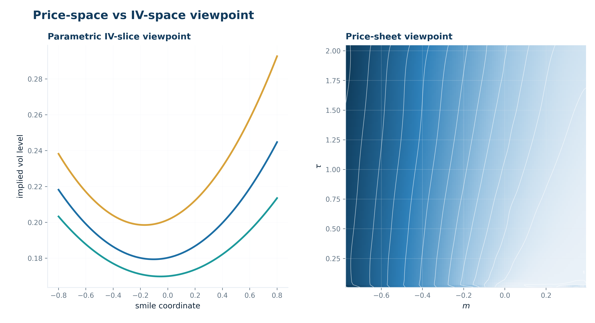
The last panel compares two modelling domains: maturity smiles in implied volatility and one arbitrage-constrained sheet in price space.
In price space:
In implied-volatility space, none of this is true naturally. One must invert through a nonlinear pricing map (for example Black-Scholes),
\[ \sigma_{\mathrm{imp}} = \operatorname{BS}^{-1}\!\bigl(C^{\mathrm f};K,F,\tau\bigr), \]
and that inversion inherits all the pathologies of vega geometry: deep wings, short maturities, and low-price regions become numerically unstable and economically distorted. The static no-arbitrage system, which is linear in price space, becomes nonlinear and maturity-coupled in IV space.
Price space is the domain where arbitrage constraints, executable-band loss, spectral regularization, and local fog repair remain linear or convex.
Workflow:
Start from the correct object:
\[ C^{\mathrm f}(K,\tau)=\frac{C(K,\tau)}{D(0,\tau)}, \qquad m=\log\frac{K}{F(\tau)}. \]
Represent the entire surface in a warped Chebyshev tensor basis:
\[ u(m,\tau;a) = \sum_{k=0}^{K}\sum_{\ell=0}^{L} a_{k\ell} T_k(\Phi_m(m)) T_\ell(\Phi_\tau(\tau)). \]
Compile static no-arbitrage into linear operators:
\[ A_K a \le 0, \qquad -A_{KK}a \le 0, \qquad -A_{\tau|K}a \le 0, \qquad 0 \le Aa \le F. \]
Fit to midpoint anchors and executable bands, not to midpoint fiction:
\[ \frac12\bigl|W^{1/2}(A_q a-y)\bigr|_2^2 + \mu\sum_i \ell_{\mathrm{band}}((A_q a)_i;b_i,a_i). \]
Regularize only what actually needs regularization: spectral excess, density instability, short-end boundary inconsistency, and dangerous high-frequency short-end modes.
Interpret the constrained solve as a projection:
\[ a^\star = \arg\min_{a\in\mathcal C} \frac12(a-\hat a)^\top H(a-\hat a). \]
Build a badness map from quote misses and operator defects. Activate local patches only where the global projection is under real stress. Lift those patches into a discrete fog over \((m,\tau,u)\). Penalize fog thickness through an explicit noise-aware trade-off rather than through arbitrary slack.
What emerges is a two-scale geometry of the option book.
The global scale is deterministic, convex, operator-driven, and economically disciplined. The local scale is probabilistic, patchwise, and explicitly noise-aware.
The global surface remains deterministic. Local inconsistency is handled separately by a patchwise probability fog over price levels.